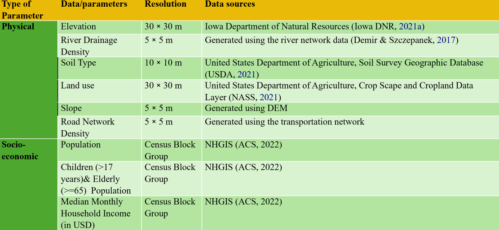
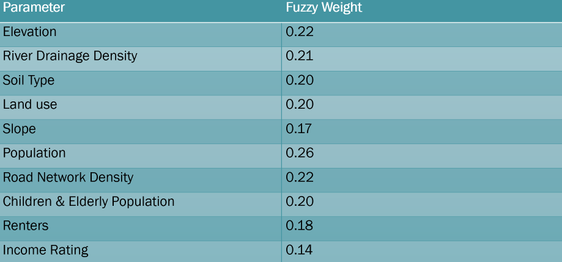

This project enhances flood risk assessment using fuzzy logic integrated with geospatial analysis. It produces detailed vulnerability maps by analyzing topography, hydrology, land use, and socio-economic variables. The method is adaptive and better represents the uncertainties in flood dynamics.
Our goal is to create dynamic flood-prone area maps that support policymakers, urban planners, and emergency responders with reliable data for proactive decisions.
This project uses 10 key parameters to analyze flood susceptibility.

Using fuzzy logic, we assign probabilities to geographical zones based on uncertain or overlapping input data. This boosts the accuracy of predictions and allows more nuanced decisions.
Fuzzy logic enhances GIS capabilities to model ambiguous data, essential for spatial analysis in flood mapping.
Fuzzy Weights for Parameters:

This project aids disaster preparedness, promotes sustainable development, and protects vulnerable communities through data-driven flood forecasting.
📖 Read the Journal Paper